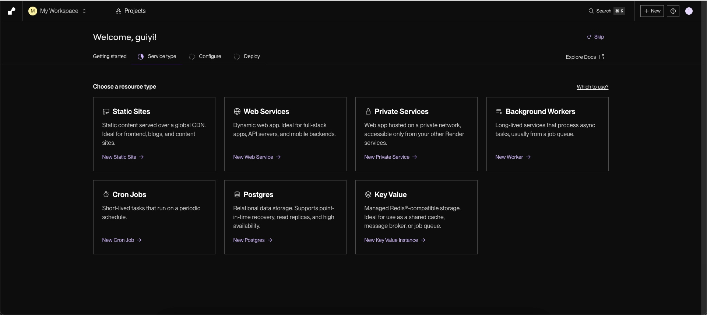
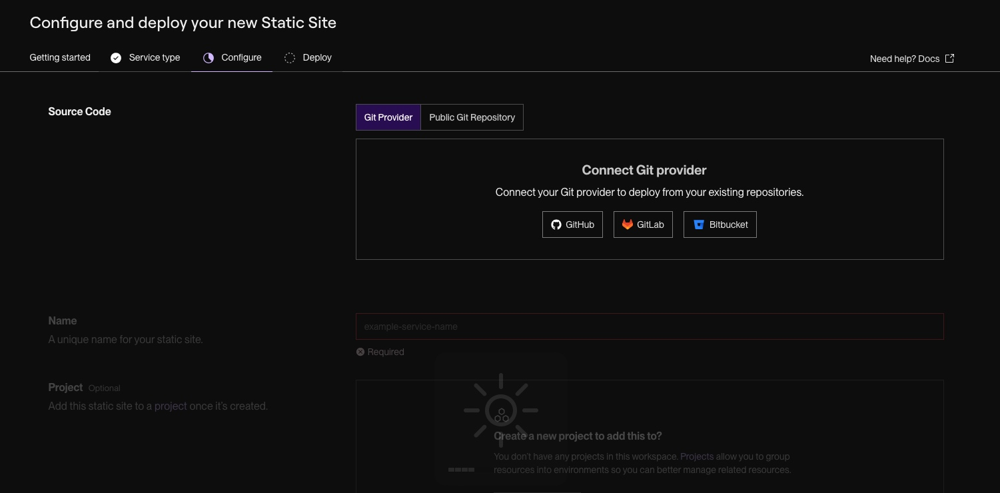
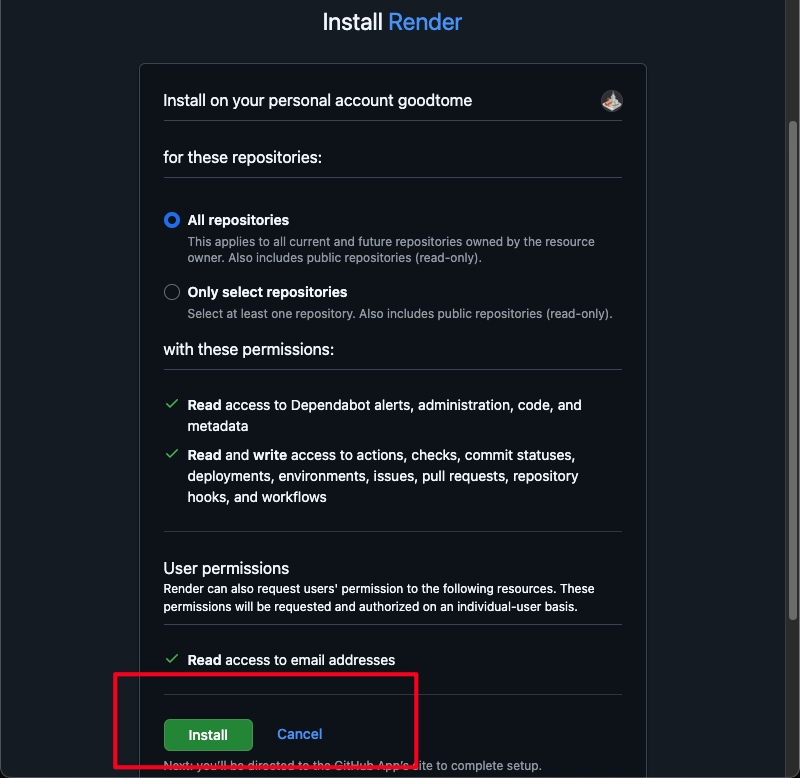
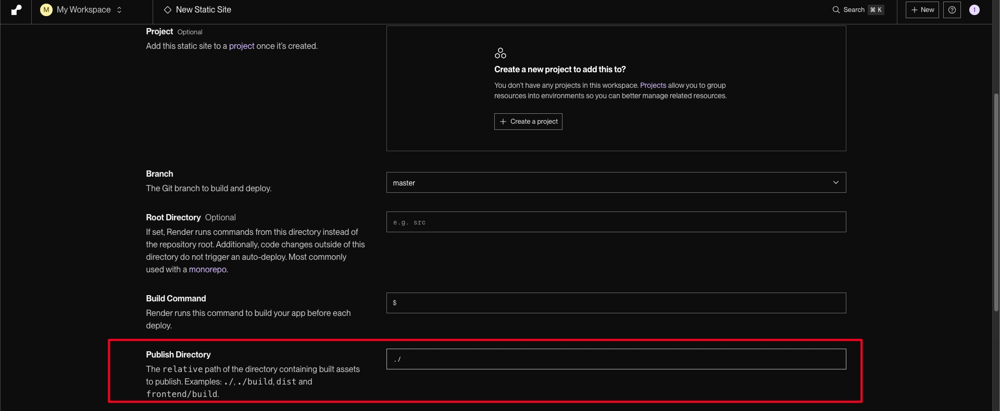
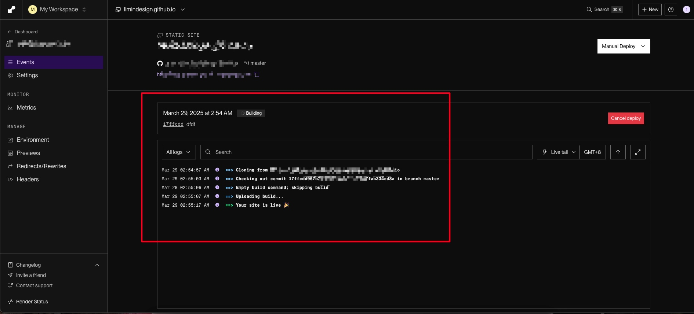

账号登录
因为后期代码会上传到GitHub上，所以使用GitHub进行登录，方便后期拉取代码。
选择部署应用类型
可以选择的包括静态网站，web app.
本次选择第一个静态网页的部署，点击new static website，然后进行到下一步。

配置代码地址
可以现在从不同的地方配置代码，包括GitHub、gitlab、bitbucket以及自己的服务代码地址。
可以根据自己代码习惯，选择适合是的代码仓库地址，我这里选择的是GitHub，因为本身比较熟悉一点。注意选择合适的授权，将GitHub和render链接起来。


选中自己想要构建的仓库,填写相关的部署信息，注意在构建项目信息的时候可以填写到根目录下。


部署静态网页
在填写相关信息后就能部署了，在红框中还能实时看到部署的进度，方便排查问题。

访问地址
在设置setting和监视器metrics中都能找到访问的地址，并且在setting中还能对访问地址进行修改，也能通过重定向，访问到指定的域名上，需要绑定DNS。